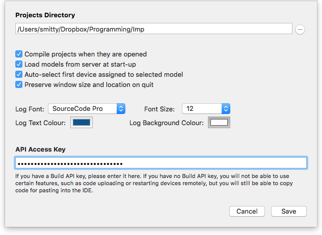

Squinter“A Squirrel Integrator”
Contents |
Configuring Squinter
To take full advantage of Squinter’s features, you will need not only an Electric Imp account but also a Build API key. You can obtain a Build API key by logging in to the Electric Imp IDE via a web browser and selecting ‘Build API Keys’ from the username menu. Paste your API key into the field provided in Squinter’s Preferences panel, accessed through the ‘Squinter’ menu.

The Preferences panel also allows you to select the log window’s font, text size and the colour, and the colour of the background. It provides a number of other useful settings too. You can also select your main Electric Imp projects folder.